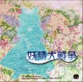

- Welcome to Touhou Wiki!
- Please register to edit. For assistance, check in with our Discord server or IRC channel.
Talk:Fairy Wars
Restructuring[edit]
Hey guys. I've been doing some moving around of information and wanted to set up a few guidelines to follow in general.
- Get rid of "Miscellaneous" pages as soon as possible. I've taken all the information in that page and put it in other ones where it made more sense, so it's quite possible.
- I made a new navbox(that's not really a navbox) - it's just a trial, so I wanted to see how people liked it.
- Direct translation of the game manual doesn't constitute a gameplay article.
- Gameplay articles should include information on how the game works not how the game should be played. See Fairy Wars: Gameplay and Fairy Wars: Strategy for how I did this.
- I've created a Tools page to house a list of tools and tweaks applicable to Fairy Wars. I see that Windows 2000 fix all the way down at the bottom - that would go great on that page.
Just a few things. I'm planning on creating a page for each different tool in itself(Brightmoon, THxxBGM, etc.) in order to continue getting rid of the "Miscellaneous" category, as well. Darkslime 16:44, November 5, 2010 (UTC)
Page Title[edit]
Since edit wars might invariably start: Can we agree on, at the very least, what the 'main page' for this is going to be called? Alternate names can obviously be redirects (Much like Unthinkable Natural Law is for Hisoutensoku). Yes, there is "Fairy Wars" as a bit of english on the bottom of the in-game screen, but that's all there is in strict english. My personal vote is just to use the romanized Touhou Sangessei, much like was done for 12.3, as neither specifically featured english in the title. Obviously I'm not saying people can't use other names before someone misinterprets this as that, but rather, that the main page for this article should be Touhou Sangessei. Feel free to argue with me, but that's my two cents, and I figure best to start off a discussion now, as, y'know, edit wars are going to go nuts over this page soon, most likely. -- Garlyle 16:40, July 23, 2010 (UTC)
- Fairy Wars, that's it -- KyoriAsh 16:45, July 23, 2010 (UTC)
- Touhou Sangessei already belongs to the 3 fairies series, so yeah. !8RstuPId2Y 16:57, July 23, 2010 (UTC)
- Using Touhou Sangessei will confuse it with the printed works sharing the same name. I'm fine with either Fairy Wars or Great Fairy Wars for now. - Kiefmaster99 21:07, July 23, 2010 (UTC)
- Whelp, I created "Fairy Wars" on ru:touhou and it's been moved to "Yousei Daisensou ~ Touhou Sangessei". So we need to settle on something soon. I personally prefer Fairy Wars, or any permutation of such. Momiji 03:47, July 24, 2010 (UTC)
- I think it's a little too early to completely solidify a name right now. All we have are five screenshots and a title. Who knows? When the game is released, the jewel case might have an English name (like Double Spoier) or maybe there's something else in the game that can be used as an English name. "Fairy Wars" works for me right now though. !8RstuPId2Y Talk Contribs 04:07, July 24, 2010 (UTC)
- Erm, the Double Spoiler already in the title screen, so the jewel case will be almost same as the title screen, that's means Yousei Daisensou (Preferable move to Great Fairy Wars - KyoriAsh 05:22, July 24, 2010 (UTC)
- I think it's a little too early to completely solidify a name right now. All we have are five screenshots and a title. Who knows? When the game is released, the jewel case might have an English name (like Double Spoier) or maybe there's something else in the game that can be used as an English name. "Fairy Wars" works for me right now though. !8RstuPId2Y Talk Contribs 04:07, July 24, 2010 (UTC)
- Whelp, I created "Fairy Wars" on ru:touhou and it's been moved to "Yousei Daisensou ~ Touhou Sangessei". So we need to settle on something soon. I personally prefer Fairy Wars, or any permutation of such. Momiji 03:47, July 24, 2010 (UTC)
- Using Touhou Sangessei will confuse it with the printed works sharing the same name. I'm fine with either Fairy Wars or Great Fairy Wars for now. - Kiefmaster99 21:07, July 23, 2010 (UTC)
- Touhou Sangessei already belongs to the 3 fairies series, so yeah. !8RstuPId2Y 16:57, July 23, 2010 (UTC)
It says "Fairy Wars" on the bottom right of the screenshots anyways, right? Hisoutensoku didn't have any official translation, in the title or otherwise. Even if it's not part of the official title, Fairy Wars is an official translation by ZUN.
The English title for Yousei Daisensou is called Fairy Wars undeniably. But if one wanted to translate the word Yousei Daisensou by itself, i suggest it's translated as 'War of the Fairies'. I'd say this maybe because the Japanese translation for H.G Wells 'War of the Worlds' was translated as Uchuu Daisensou. Although the meaning is different, but you got the idea. - Reppu kiri 16:43, August 2, 2010 (UTC)
- I've edited main article of this page, translated to follow Japanese title like "Great Fairy War". But now I'm having a possibility that "Fairy Wars" on some screenshots is put purposely for a parody of "Star Wars". If so, my opinion is we should keep this name.
- And, well, this is an important assignment, but the Japanese counterpart title of "the War of the Worlds" isn't "Uchuu Daisensou" but "Uchuu Sensou". --masuo64 Talk 07:56, August 3, 2010 (UTC)
"It says "Fairy Wars" on the bottom right of the screenshots anyways, right? Hisoutensoku didn't have any official translation, in the title or otherwise. Even if it's not part of the official title, Fairy Wars is an official translation by ZUN." Argument over.
- So was Double Spoier [sic], but we didn't keep that. I would be arguing apples and oranges though. DS is a spelling error/mistake, this one is an omission, not accounting for 大 (Great). This is just an inclusion issue. And no, unlike Hisoutensoku, there is not going to be a TL bitchfest over the meaning of 大. - Kiefmaster99 14:28, August 12, 2010 (UTC)
The misspelling 'Double Spoier' was only a singular instance. In all other instances with the title, (such as the title screen,) it is spelt correctly. On the other hand, Fairy Wars has appeared consistently as ZUN's translation (if only because there is so little information,) thus it is not a singular instance, and not an unintentional error, as far as we know. Unless ZUN has a different translation that includes the semantic role of 大 the closest thing we'll have to an official title is Fairy Wars.
- Having tried the game now, I am now under the impression that if ZUN were to assign this game an English title, it would almost definitely be Fairy Wars. In addition to the HUD, Fairy Wars also shows up in a music title (His typo being oddly appropriate). Stick with Fairy Wars. - Kiefmaster99 06:54, August 15, 2010 (UTC)
Today's the day~ How exciting.
Gameplay[edit]
"The game plays somewhat like a fusion of the Shoot the Bullet series, and the Phantasmagoria series, combined with "standard" touhou gameplay." -- Does this first paragraph have any meaning at all? It basically just says "This has elements from previous touhou games." No duh.
- It's Phantasmagoria in the sense that there is a charged shot+standard, StB in the sense that there is strategic use of charged shots, plus standard. The fact that it's fairy unique ought to be mentioned somehow. - Kiefmaster99 06:54, August 15, 2010 (UTC)
- I haven't tried this out yet, but that sounds a lot like Uwabami Breakers. And I loved Uwabami Breakers !8RstuPId2Y Talk Contribs 06:59, August 15, 2010 (UTC)
Cover image issues?[edit]
Is it me or is the cover image not changing? I can open it by itself and it shows the CD cover scan, but the same image on the article page still shows the game screenshot. Anyone else getting this? Momiji 16:52, August 16, 2010 (UTC)
- I've been trying to fix this by myself for the past hour but to no avail. I can't seem to figure out how to get the old thumbs to change to the new one. All I get is a distorted version of the old image. The solution might have something to do with purging.
Or maybe try re-uploading it and see if that fixes it?That didn't work. - 120px:,
- 121px:
- (If both images are the same, the problem is considered to be fixed.) - Kiefmaster99 17:24, August 16, 2010 (UTC)
- Edit: I'm going to try another solution - use a file name that doesn't have two decimal points. Or just create a new image altogether. That works.
Cirno is now on two cover images. We are all doomed.
Fonts used?[edit]
Just out of curiosity, does anyone know what fonts ZUN used in this game? Blaze0041 06:27, August 17, 2010 (UTC)
東方三月精 (Touhou Sangessei? Sangetsusei?)[edit]
I have come across multiple versions of this now. Sangessei is currently being used on this page. Sangetsusei is being used in the Glossary. Which one of these is it, or is it something else? Japanese Wikipedia gives me とうほうさんげつせい (touhou sangetsusei)、とうほうさんげっせい (touhou sangessei). The latter is cited with "単行本奥付による。『第2部』1巻は促音表記（初版で確認）、他はいずれも清音表記。" - Kiefmaster99 23:29, August 27, 2010 (UTC)
- Issue resolved by note on bottom of SaBND page. - Kiefmaster99 05:20, September 20, 2010 (UTC)
How to make this game work on Windows 2000[edit]
Relevant video: [1]
Instructions on using the KDW API Wraper: [2]
What you want to do: put KernelXP.dll in the folder using the DLL wrappers installer, and use fcwin2k.exe to convert both custom.exe and th128.exe to using KernelXP.dll. It is quite simple to make it work on Windows 2000.
Could this information perhaps be added somewhere?--Tosiaki 00:51, September 20, 2010 (UTC)
Portrait art[edit]
There's been rumours in the past that ZUN got help with (colouring) the portraits of some of the newer games. Of course I can't exactly confirm any part of this rumour myself. If anyone stumbles upon information regarding aiding in art in other games, please provide information. I was never too fond of the sentence "It is a continuation of a story in Strange and Bright Nature Deity and is the only danmaku game by ZUN where he did not draw the portraits himself.", as it is only true till the opposite is proven. Redtails 14:04, November 6, 2010 (UTC)
About the Kanji 大[edit]
I see 大 in the title. Shouldn't the articles name change to "Great Fairy Wars"? ～ Tony64 (Talk/Con.) 16:36, 27 March 2012 (UTC)
- You may find your answer in the very page you posted your question lol. --This message from DeltaSierra4 was delivered on 17:14, 27 March 2012 (UTC)
Title translation[edit]
There's some inconsistence in translation of 東方三月精, being translated as Eastern Three Fairies in game's title and Touhou Three Moon Fairies in Music section as part of the title of Strange and Bright Nature Deity. Furthermore I think that both may be wrong.
My knowledge about Japanese is somewhat limited, but as far as I know:
- 東方 (Touhou) means "East", "Eastern"
- 三月 is March (lit. "third month")
- 精 may be either "spirit", "essence" or "fine details", or simply abbreviation of 妖精 - "fairy"
I'd appreciate if someone knowing Japanese a bit better could prove me that the current translation is right.
DennouNeko (talk) 07:19, 3 September 2012 (EDT)
- Seems like I won't know why literal translation is not literal... Oh well, never mind then.
BTW, suggested literal translation would be "Eastern March Fairies"
• DennouNeko–[ 19:16, 10 October 2012 (EDT)
- Part of the problem is that the title itself seems to contain inherent wordplay. Some of it is noted on Three Fairies of Light. Also, it's likely that 月 is referring to the moon, since the fairies have nothing to do with months, three months, or the 3rd month. The best literal translation would be "Eastern Three Moon Fairies". The figurative one used here seems to omit the moon, in part probably since it doesn't tie in with Sunny nor Star. - Kiefmaster99 (talk) 22:18, 10 October 2012 (EDT)
- The figurative one used here seems to omit the moon
- I'll say it's "ignore" rather than "omit". Anyway, even though the most "literal" translation is "Three Moon Fairies" I think the "Three Fairies" is a lot more better translation, since without the wordplay it doesn't make much sense. You can drop the "lit." if you want to be strict with the definition.--Doncot (talk) 23:53, 10 October 2012 (EDT)
- Part of the problem is that the title itself seems to contain inherent wordplay. Some of it is noted on Three Fairies of Light. Also, it's likely that 月 is referring to the moon, since the fairies have nothing to do with months, three months, or the 3rd month. The best literal translation would be "Eastern Three Moon Fairies". The figurative one used here seems to omit the moon, in part probably since it doesn't tie in with Sunny nor Star. - Kiefmaster99 (talk) 22:18, 10 October 2012 (EDT)
- Hmm... Yeah, in such cases I'd either simply drop the "lit." or add literal translation and a note about the wordplay.
- Well, there's also something that friend noted. Looking at the story the chances that everything is happening in March are also pretty high.
- Anyway, this explained a lot. Thanks.
- • DennouNeko–[ 05:17, 11 October 2012 (EDT)
- I'm still think that 三月 referring to March is incidental at best, as the title is not only used to refer to Fairy Wars (which takes place in spring) but also the other three manga works (which take place year-round). We could use "roughly 'Three Fairies'", ignoring the Moon part. - Kiefmaster99 (talk) 10:31, 11 October 2012 (EDT)
- That's also true. And since the game was created after manga, it would be weird if it was intentionally referring to March.
Well, I'm fine with the rough translation.
• DennouNeko–[ 10:44, 11 October 2012 (EDT)
- That's also true. And since the game was created after manga, it would be weird if it was intentionally referring to March.
- BTW, about the March thing: Although written in same kanji, March is read sangatsu, and as a native speaker I can assure you that I've never heard "sangetsu" used for March - well, in fact all the "sangetsu" I get from googling are either Touhou Sangetsusei or ones coming from sangetsu written in 山月 (lit. "mountain moon") which is completely unrelated here.--Doncot (talk) 12:27, 11 October 2012 (EDT)
- Thanks. I'll try to remember about it. • DennouNeko–[ 12:46, 11 October 2012 (EDT)